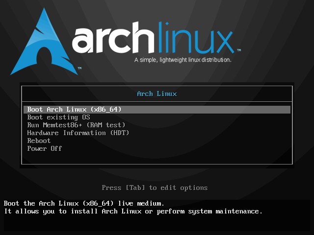
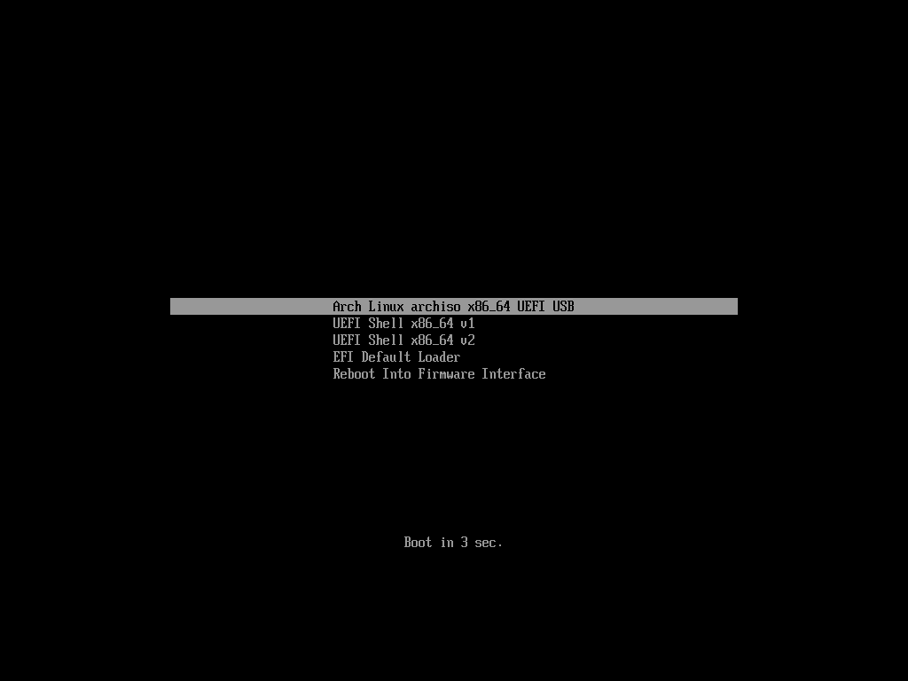

安装 archLinux
参考链接：
Arch Linux 安装指南[2018.12.01] / 安装问题 / Arch Linux 中文论坛
Installation guide (简体中文) - ArchWiki)
给 GNU/Linux 萌新的 Arch Linux 安装指南 rev.B - 约伊兹的萌狼乡手札
安装前准备
# 下载 iso 镜像
# 1、插入U盘，df -h 查看U盘文件系统挂载情况，然后使用 umount /dev/sdb* 卸载U盘文件系统；
# 2、执行命令：sudo mkfs.xxx /dev/sdb 格式化U盘为 xxx 格式；
# 请将xxx换成您需要的文件系统类型，如fat、vfat、ntfs、ext4等等、或者 windows 用户推荐 rufus
# 3、dd if=*/*.iso of=/dev/sdb bs=4M (数据块大小，每个数据块只能存一个文件的数据)
# 4、执行sync，同步缓存中的数据至U盘
sudo dd bs=4M if=archlinux.iso of=/dev/sdx status=progress && sync
启动安装环境
成功从准备好的安装介质中启动后，屏幕将呈现出一个菜单。请使用 [↑]/[↓]（方向键）进行选择，[↩] （回车键）确认。 BIOS：

UEFI：

当屏幕上出现命令行提示符及闪烁的光标时即启动完毕。
设置键盘布局
默认键盘布局为 US（美式键盘）。如需修改键盘布局请使用 loadkeys 命令。如需修改字体请使用 setfont 命令。
网络连接
ArchISO 在启动时会尝试连接网络，可通过命令 ping 查看连接是否已建立。
ping -c 4 www.baidu.com
若网络尚未连接，请先接入网络。若使用 WiFi 连接，请使用 wifi-menu 命令。

若使用 ADSL 宽带连接，请使用 pppoe-setup 进行配置，再使用 systemctl start adsl 进行连接。
刷新本地时间
# timedatectl set-ntp true
配置软件仓库镜像
软件仓库镜像是软件仓库的拷贝副本。Arch Linux 在许多国家和地区都有仓库镜像，但是默认开启了所有仓库镜像，因而用户可能无法充分利用当地网络优势。为了达到最高的下载速度，需调整镜像顺序，提高当地镜像的优先级。 Arch Linux 的仓库镜像地址存于 /etc/pacman.d/mirrorlist，每行一条按使用顺序排序。要让 Arch Linux 的包管理器 pacman 优先使用指定的仓库镜像，只需调整顺序，使之置于前列即可。
# nano /etc/pacman.d/mirrorlist
- [F6] 搜索 china
- [方向键] 移动光标至 Server 行
- [CTRL+K] 剪切该行
- [方向键] 移动光标至其他 Server 行前
- [CTRL+U] 粘贴至此行
- [CTRL+O] 保存，[回车键] 确定
# 中国大陆用户可使用以下命令选取大陆镜像服务器。
# sed -i '/China/!{n;/Server/s/^/#/};t;n' /etc/pacman.d/mirrorlist
然后用 pacman -Syy 刷新一下软件包数据库
环境检查
启动模式检查
# ls /sys/firmware/efi/efivars
若该目录不存在，则当前是以 BIOS/CSM 模式启动，否则是以 UEFI 模式启动。
分区
分区方案
- Arch Linux 要求至少一个分区分配给根目录 /。
- 在 UEFI 系统上，需要一个 UEFI 系统分区。
实施分区
首先使用 lsblk 或 fdisk -l 确定目标磁盘及目标分区。
# fdisk -l
结果中以 rom，loop 或者 airoot 结束的可以被忽略。
对于一个选定的设备，以下的分区是必须要有的：
如果需要创建多级存储例如 LVM、disk encryption 或 RAID，请在此时完成。
然后使用分区工具如 parted、cfdisk、cgdisk 进行分区。推荐 cfdisk
# cfdisk /dev/sdX # sdX 为目标磁盘
新建分区：
1. [↑]/[↓]（方向键）选中 Free space（空闲空间）
2. [←]/[→]（方向键）选中 New 新建分区
3. [←]/[→]（方向键）选中 Type 选择分区类型（默认为 Linux filesystem；对于 EFI 系统分区选择 EFI System）
4. 输入分区大小（默认单位为字节，可以加上后缀K、M、G），[回车键] 确认
写入分区表：
1. [←]/[→]（方向键）选中 Write
2. 输入 yes [回车] 确定写入
分区示例
| BIOS 和 MBR#Master_Boot_Record) | |||
|---|---|---|---|
| 挂载点 | 分区 | 分区类型 | 建议大小 |
/mnt |
/dev/sd*X*1 |
Linux | 剩余空间 |
| [SWAP] | /dev/sd*X*2 |
Linux swap (交换空间) | 大于 512 MiB |
| UEFI with GPT#GUID_分区表) | |||
| 挂载点 | 分区 | 分区类型 | 建议大小 |
/mnt/boot or /mnt/efi |
/dev/sd*X*1 |
EFI 系统分区) | 260–512 MiB |
/mnt |
/dev/sd*X*2 |
Linux x86-64 根目录 (/) | 剩余空间 |
| [SWAP] | /dev/sd*X*3 |
Linux swap (交换空间) | 大于 512 MiB |
分区格式化（创建文件系统）
首先使用 lsblk 或 fdisk -l 确定目标磁盘及目标分区。
# lsblk
然后使用格式化工具进行格式化。本文推荐 EXT4 文件系统，其格式化工具为 mkfs.ext4。
# mkfs.ext4 /dev/sdXY # sdXY 为目标分区
举个例子，如果根分区在 /dev/sd*X*1 上并且会使用 *ext4* 文件系统，运行：
# mkfs.ext4 /dev/sdX1
如果您创建了交换分区（例如 /dev/*sda3*），使用 mkswap 将其初始化：
# mkswap /dev/sdX2
# swapon /dev/sdX2
如果要格式化新的 EFI 系统分区的话，用 mkfs.vfat
挂载分区
请注意挂载次序。从根目录开始，先挂载父目录，再挂载子目录
# mount <分区> <挂载点>
将根分区挂载到 /mnt，例如：
# mount /dev/sdX1 /mnt
创建其他剩余的挂载点（比如 /mnt/efi）并挂载其相应的分区。
安装基础包
文件 /etc/pacman.d/mirrorlist 定义了软件包会从哪个 镜像源 下载。在 LiveCD 启动的系统上，所有的镜像都被启用，并且在镜像被制作时，我们已经通过他们的同步情况和速度排序。
在列表中越前的镜像在下载软件包时有越高的优先权。你可以相应的修改文件 /etc/pacman.d/mirrorlist，并将地理位置最近的镜像源挪到文件的头部，同时你也应该考虑一些其他标准。
这个文件接下来还会被 pacstrap 拷贝到新系统里，所以请确保设置正确。
使用 pacstrap 脚本，安装 base 软件包和 Linux 内核以及常规硬件的固件：
# pacstrap /mnt base
配置基础系统
生成分区表
用以下命令生成 fstab 文件 (用 -U 或 -L 选项设置UUID 或卷标)：
# genfstab -U /mnt >> /mnt/etc/fstab
接着使用 arch-chroot 进入新系统。
# arch-chroot /mnt
时区
# ln -sf /usr/share/zoneinfo/$(tzselect) /etc/localtime
# 中国大陆用户使用以下命令。
# ln -sf /usr/share/zoneinfo/Asia/Shanghai /etc/localtime
硬件时间设置
运行 hwclock(8) 以生成 /etc/adjtime：
# hwclock --systohc
本地化设置
进行本地化设置以正确显示本地文字、货币、时间与时期格式以及其它本地相关标准。 编辑 /etc/locale.gen，去掉需要的 locale 的注释（行头的字符 #）。
# nano /etc/locale.gen
- [F6] 搜索 zh_CN.UTF-8
- [←]/[→]（方向键）移动光标至字符 # 处
- [DELETE]/[BACKSPACE] 删除字符 #
- [CTRL+O] 保存，[回车键] 确定
然后使用 locale-gen 生成 locale。
# locale-gen
接着使用以下命令设置默认 locale。
# echo LANG=<默认 locale> > /etc/locale.conf
# echo 'LANG=zh_CN.UTF-8' > /etc/locale.conf
警告: 不推荐在此设置任何中文 locale，会导致 TTY 乱码。
主机名
# echo <主机名> > /etc/hostname
接着向 /etc/hosts 文件添加 hosts 条目。
#<ip-address> <hostname.domain.org> <hostname>
127.0.0.1 localhost.localdomain localhost
::1 localhost.localdomain localhost
127.0.1.1 <主机名>.localdomain <主机名>
网络连接
考虑到多数用户最终会安装图形化的桌面环境，因而推荐使用兼容性较好 NetworkManager 来管理网络。需要注意的是，当前安装环境已连接至网络，请勿尝试多次连接，而待安装完成并重启后再进行连接。
首先安装 NetworkManager：
# pacman -S networkmanager
- 如果需要图形化的管理工具，以便稍后在桌面环境中使用，可接着安装 nm-connection-editor
- 如果需要系统托盘工具，可接着安装 network-manager-applet
- 如果需要 ADSL 支持，需要安装 rp-pppoe
为 root 用户设置密码
# passwd
安装引导程序
引导程序是机器启动后运行的第一个程序，其作用在于加载并启动系统内核。本文推荐安装并介绍如何配置 GRUB 作为引导程序。如需安装其他引导程序
BIOS 系统：
# pacman -S grub os-prober
# grub-install --target=i386-pc /dev/sdX # sdX 为目标磁盘
# grub-mkconfig -o /boot/grub/grub.cfg
UEFI 系统：
# pacman -S dosfstools grub efibootmgr
# grub-install --target=x86_64-efi --efi-directory=<EFI 分区挂载点> --bootloader-id=GRUB
# grub-mkconfig -o /boot/grub/grub.cfg
完成安装
至此，基础可用的 Arch Linux 便安装完毕。现在按下列步骤退出安装环境并重启。
- 使用命令 exit 或 [CTRL+D] 退回安装环境
- 卸载新分区：
# umount -R /mnt
- 重启
# reboot
- 移除安装介质
用户管理
添加用户使用 useradd 命令。具体用法请查看 man 手册或 help 消息。
# useradd -m -g users -s /bin/bash archuser
该命令创建一个名为 archuser 的用户，指定登录 shell 为 bash，所属主用户组 users，并在 /home 下创建同名用户文件夹。
passwd archuser
该命令为用户 archuser 设置密码。
设置 sudo
sudo 应该已经作为 base-devel 的一部分装上去了，如果没有的话也可以自己手动安装一下：
# pacman -S sudo
sudo 的配置文件是 /etc/sudoers ，但是咱们不会直接去编辑它（因为一旦搞坏了不好修）。 所以有一个 visudo 的命令用来代理编辑它（就是先编辑一个临时文件，然后检查有没有错误， 一切 OK 后再覆盖）。
虽然这个文件有很多行，但是咱们还是先从让它能够工作开始来最小的修改它。
找到下面的这一行，然后把 %wheel 前面的注释符号（#）去掉，不过百分号要留下：
## Uncomment to allow members of group wheel to execute any command
# %wheel ALL=(ALL) ALL
然后就可以保存退出啦~ （效果就是注释里说明的，给 wheel 组执行所有命令的权限）
如果汝不想每一次都在前面加上 EDITOR 来指定编辑器的话，可以加上这几行：
# 重设默认的环境变量
Defaults env_reset
# 设置默认的编辑器，并使 visudo 不再读取环境变量 editor 的值。
Defaults editor=/usr/bin/nano, !env_editor
配置图形界面
安装显卡驱动
官方软件软件仓库为主流的显卡提供了驱动包：
### 通用显卡驱动 xf86-video-vesa 是开源的显卡驱动实现，提供了最基本的显示功能。
### 因特尔显卡驱动 因特尔显卡应当是开箱即用的，不需要安装显卡驱动，但通常建议安装 mesa 以支持 3D 加速。如果需要 Vulkan 支持（需 Ivy Bridge 及更新架构），须安装 valkan-intel。如果需要支持 Xorg 2D 加速，须安装 xf86-video-intel。 然而需要注意的是，安装 xf86-video-intel 与否需要更多斟酌，详见此处)。
### 英伟达显卡驱动 英伟达显卡驱动有第三方的开源实现 xf86-video-nouveau 和英伟达官方私有驱动 nvidia 系列。
* 对于 GeForce 600 及更新系列（除了 610, 620, 625, 705, 800A 和其他低端重贴牌显卡）请安装 nvidia * 对于 2010 至 2011 年间 GeForce 400/500 请安装 nvidia-390xx * 对于 2006 至 2010 年间 GeForce 8000/9000、ION 和 100-300 系列 [NV5x, NV8x, NV9x and NVAx] 请安装 nvidia-340xx * 更早的显卡系列驱动请查阅此处
如果需要 NVIDIA Optimus 支持，请查阅此处)。
### AMD/ATI AMD/ATI 显卡驱动原先有开源实现 xf86-video-ati 及闭源实现 AMD Catalyst。而AMD 自统一开源驱动和闭源驱动后又发布了新的开源实现 xf86-video-amdgpu 和闭源实现 AMDGPU PRO。其中 AMD Catalyst 及 AMDGPU PRO 不被 Arch Linux 官方所支持（未收录于官方软件仓库）。
* xf86-video-amdgpu 支持 GCN 1、GCN 2、GCN 3、GCN 4 及更新架构的显卡。 * AMDGPU PRO 支持 GCN 3、GCN 4 及更新架构的显卡。 * xf86-video-ati 支持 X1000 及更早的显卡、TeraScale 1、TeraScale 2、TeraScale 3、GCN 1、GCN 2 架构的显卡。 * AMD Catalyst 支持 TeraScale 2、TeraScale 3、GCN 1、GCN 2、GCN 3 架构的显卡。 * AMD Catalyst Legacy 支持 TeraScale 1 架构的显卡。
中文字体
本文推荐思源黑体，可通过以下命令安装。
# pacman -S adobe-source-han-sans-cn-fonts
安装桌面环境
安装桌面环境需要的基础包 （就是 xorg ）
# pacman -S xorg
这时会让汝选择需要哪些软件包啦,其实大多数时候默认的就行……
接下来挑一个喜欢的桌面环境包组装上咯~
GNOME , 想要 GNOME 全家桶的话带上 gnome-extras
# pacman -S gnome
KDE Plasma , 想要 KDE 全家桶的话用 kde-applications-meta 代替 。 kde-applications 会提示汝选择要安装哪些包。
以及一个显示管理器， KDE 和 sddm 一起使用最好。
# pacman -S plasma sddm kde-applications
或者只安装 kdebase 组，包含了一些基本组件（例如文件管理器和终端模拟器）。
# pacman -S plasma sddm kdebase
安装中文输入法
# 推荐阅读
收尾工作
激活需要的服务，例如一个显示管理器，在例如 gdm ：
# systemctl enable gdm
当然还有 NetworkManager：
# systemctl enable NetworkManager
设置用户级别的 locale
用 su 切换到刚建立的用户，然后编辑 ~/.config/locale.conf 修改自己的 Locale ，例如：
LANG=zh_CN.UTF-8
LC_CTYPE="zh_CN.UTF-8"
LC_NUMERIC="zh_CN.UTF-8"
LC_TIME="zh_CN.UTF-8"
LC_COLLATE="zh_CN.UTF-8"
LC_MONETARY="zh_CN.UTF-8"
LC_MESSAGES="zh_CN.UTF-8"
LC_PAPER="zh_CN.UTF-8"
LC_NAME="zh_CN.UTF-8"
LC_ADDRESS="zh_CN.UTF-8"
LC_TELEPHONE="zh_CN.UTF-8"
LC_MEASUREMENT="zh_CN.UTF-8"
LC_IDENTIFICATION="zh_CN.UTF-8"
LC_ALL=
Pacman 命令详解
## Pacman 命令详解
# Pacman 是一个命令行工具，这意味着当你执行下面的命令时，必须在终端或控制台中进行。
# 1、更新系统
# 在 Arch Linux 中，使用一条命令即可对整个系统进行更新：
pacman -Syu
# 如果你已经使用 pacman -Sy 将本地的包数据库与远程的仓库进行了同步，也可以只执行：
pacman -Su
# 2、安装包
pacman -S # 包名 例如，执行 pacman -S firefox 将安装 Firefox。你也可以同时安装多个包，只需以空格分隔包名即可。
pacman -Sy # 包名 与上面命令不同的是，该命令将在同步包数据库后再执行安装。
pacman -Sv # 包名 在显示一些操作信息后执行安装。
pacman -U # 安装本地包，其扩展名为 pkg.tar.gz
pacman -U http://www.example.com/repo/example.pkg.tar.xz # 安装一个远程包（不在 pacman 配置的源里面）
# 3、删除包
pacman -R <packname> # 该命令将只删除包，不包含该包的依赖。
pacman -Rs <packname> # 在删除包的同时，也将删除其依赖。
pacman -Rd <packname> # 在删除包时不检查依赖。
pacman -Rsc <packname> # 在删除包的同时，删除所有依赖这个软件包的程序
# 4、搜索包
pacman -Ss # 关键字 这将搜索含关键字的包。
pacman -Qs # 关键字 搜索已安装的包。
pacman -Qi <packname> # 查看有关包的信息。
pacman -Ql <packname> # 列出该包的文件。
# 5、其他用法
pacman -Sw <packname># 只下载包，不安装。
pacman -Sc Pacman # 下载的包文件位于 /var/cache/pacman/pkg/ 目录。该命令将清理未安装的包文件。
pacman -Scc # 清理所有的缓存文件。
# 关于 Pacman 更加详细的用法，可以阅读 Pacman 的手册页